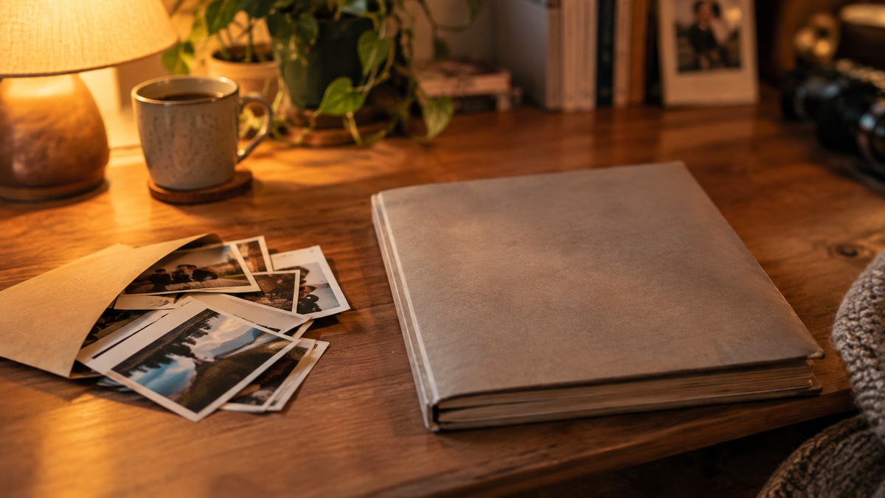

Выбираете подарок родителям, который будет “про нас”, а не просто красиво упакованная вещь? Тогда вам сюда: сегодня разберём три варианта подарка-памяти — фотокнига, альбом и чекпойнт-видео — и покажем, как не промахнуться с форматом и содержанием.
Под конец у вас будет понятный план: что собрать, как оформить и как упаковать эмоцию так, чтобы родители наверняка пересматривали снова и снова.
Подарок-память родителям: почему это сильнее, чем “просто сувенир”
Родители часто хранят не вещи, а смыслы: письма, фотографии “из тех времен”, семейные истории, которые слышали много раз, но каждый раз заново. Поэтому подарки для родителей лучше выбирать так, чтобы они помогали прожить воспоминания.
Фотокнига и альбом работают как “тихий рассказ”, а чекпойнт-видео добавляет главное — голос, интонацию и эффект “мы снова вместе”. Важно не выбрать “самое дорогое”, а выбрать “самое ваше”.
Вариант 1: фотокнига для родителей — когда хочется «история в хорошем вкусе»
Фотокнига — идеальный подарок-память, если вы хотите, чтобы всё выглядело аккуратно, “дорого” и читалось как цельный рассказ. Родителям обычно нравится, что страницы не надо постоянно держать открытыми, а верстка помогает воспринимать материал легко.
Как выбрать фотокнигу и стиль
- Цвета: тёплая база (бежевый/молочный/приглушённый серый) почти всегда уместна.
- Размер и шрифт: выбирайте так, чтобы текст читался без напряжения.
- Количество фото: лучше меньше, но удачных — иначе история “разваливается”.
Сценарий фотокниги (готовая структура)
- Титульный разворот: “Наша семья” или “История, которую я храню”.
- “Начало”: детство/юность/первые совместные годы.
- “Дом и быт”: праздники, дни рождения, моменты заботы.
- “Повороты”: важные события, переезд, работа, достижения.
- “Сегодня”: как выглядят ваши отношения сейчас.
- Финал: 5–7 тёплых строк благодарности.

Вариант 2: альбом — когда хочется тактильности и «возможности добавить свои слова»
Альбом часто выбирают те, кто хочет, чтобы подарок был не только красивым, но и “живым”: можно подписывать, вклеивать дополнительные фото, дополнять заметками.
Как сделать альбом для родителей “не музейным экспонатом”
- Берите плотные листы и качественную бумагу — чтобы фотографии не тускнели.
- Добавляйте подписи коротко: дата, место, кто на фото.
- Оставляйте места для будущего: 2–3 “страницы-добавки” на следующие семейные события.
Идеи для страниц альбома
- Страница “Как мы познакомились” — 4–6 фото по хронологии.
- Разворот “Тепло дома” — праздники, семейные традиции, кухня, прогулки.
- Страница “Спасибо за…” — в роли письма благодарности.
- Мини-раздел “Пожелания на будущее” — чтобы родители читали и сохраняли настрой.
Вариант 3: чекпойнт-видео для родителей — когда хочется «голосом, а не только фотографиями»
Чекпойнт-видео — это формат, где вы фиксируете важные этапы или “точки времени”: короткие видео-разговоры родителей, семейные ответы на вопросы, тёплые истории. Такой подарок-память часто становится одним из самых пересматриваемых, потому что там живёт эмоция — не только кадр.
Что такое “чекпойнт” простыми словами
Это не длинный документальный фильм “на час”. Чаще всего — серия коротких роликов: например, 3–5 минут, снятых по одной теме или по одной жизненной точке.
Темы вопросов для чекпойнт-видео (чтобы получилось душевно)
- Кем вы мечтали стать в молодости и почему?
- Как вы познакомились / что запомнилось сильнее всего?
- Главный урок, который вы хотите, чтобы мы унесли.
- За что вы благодарны друг другу?
- Что бы вы сказали своему “сегодня” — если бы вернулись назад?
Подсказка: задавайте вопросы спокойно, давайте паузу на ответ. Родители начинают говорить лучше, когда вы не торопите.
Как снять видео красиво, даже если вы “не оператор”
- Снимайте у окна или при тёплом рассеянном свете.
- Фон — спокойный (книги, плед, семейное фото в рамке — отлично).
- Запишите звук ближе к лицу (лучше с микрофоном или хотя бы поднести телефон).
- Сделайте “титры” смыслом, а не текстом: просто подпишите дату и тему в описании файла или на обложке ролика.
Как выбрать: фотокнига, альбом или чекпойнт-видео — быстро и по делу
Вот простой способ понять, что лучше именно вам. Оцените по пунктам, что откликается.
- Хотите “быстро собрать и красиво вручить” > фотокнига.
- Хотите “вклеивать, подписывать, дополнять” > альбом.
- Хотите “услышать голос и сохранить живую историю” > чекпойнт-видео.
- Хотите эффект “вау” и максимальную ценность > комбинируйте: фотокнига + QR-ссылка на видео (чтобы в одной истории были и кадры, и голос).
Мини-чеклист: что подготовить, чтобы подарок-память получился трогательным
- Соберите фото в хронологии (или по темам): “детство”, “работа”, “семья”.
- Подготовьте 10–20 кадров-опор: самые важные, которые точно “держат” историю.
- Заранее продумайте короткие подписи: дата/место/кто на фото.
- Для видео: выберите 3–5 вопросов и запишите 2–3 дубля.
- Подумайте о финале: 1 страница “спасибо” или 1 видео-обращение.
Итог: лучший подарок-память — тот, который возвращает в вашу любовь
Фотокнига, альбом или чекпойнт-видео — все три варианта способны стать настоящими подарками для родителей, которые хранит не коробка, а сердце. Выбирайте формат по тому, как вы хотите “сказать”: страницами, прикосновением или голосом.